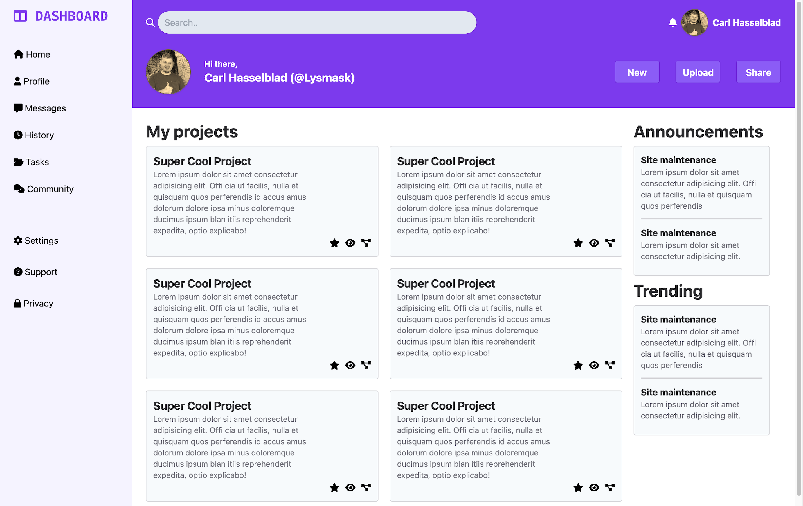
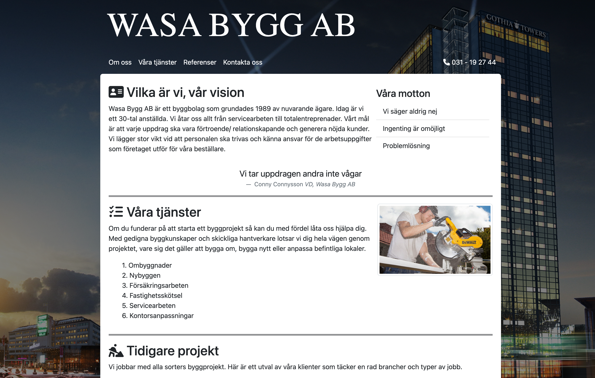

Projekt
Dashboard

En övning från The Odin Project att skapa en dashboard. Mestadels
en övning för mig att bygga en layout med CSS-Grid och Tailwind.
Wasa Bygg

Fick i uppdrag att göra om en omodern hemsida. Använde oss av
Bootstrap för första gången.